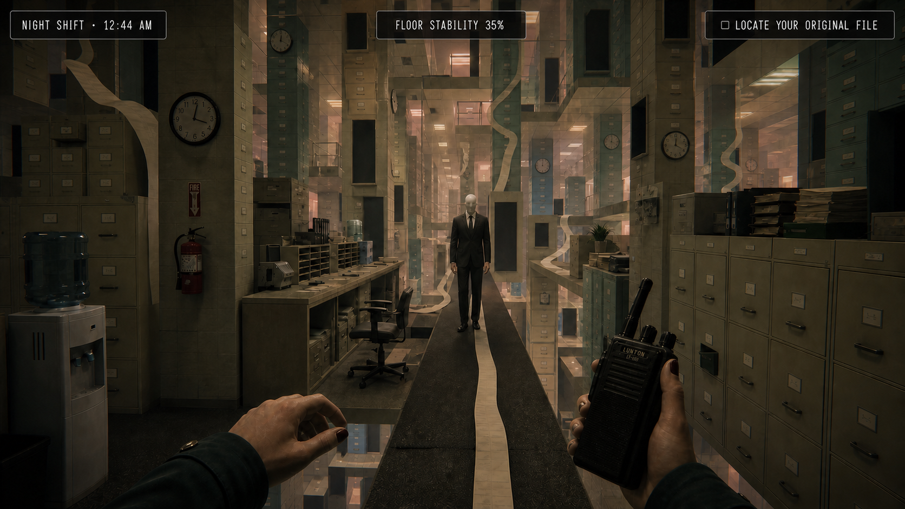
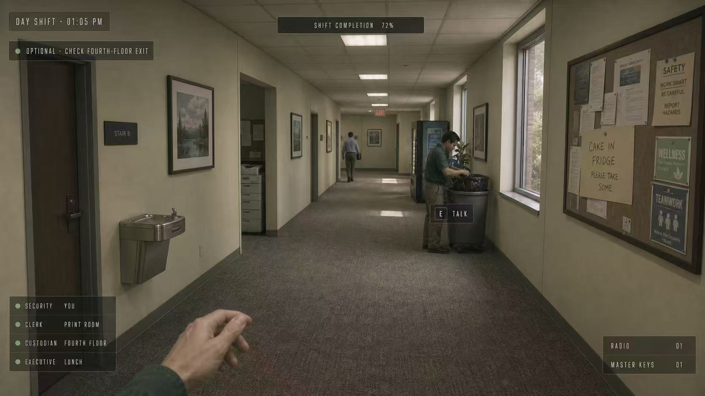
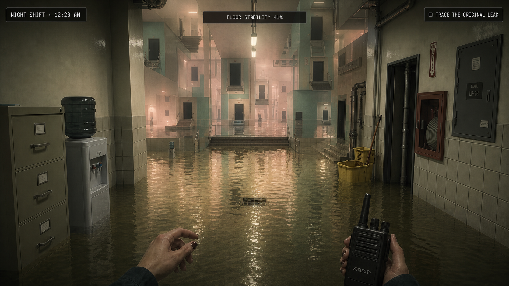
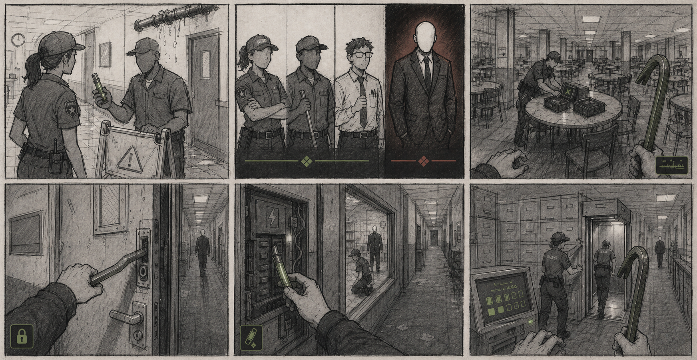
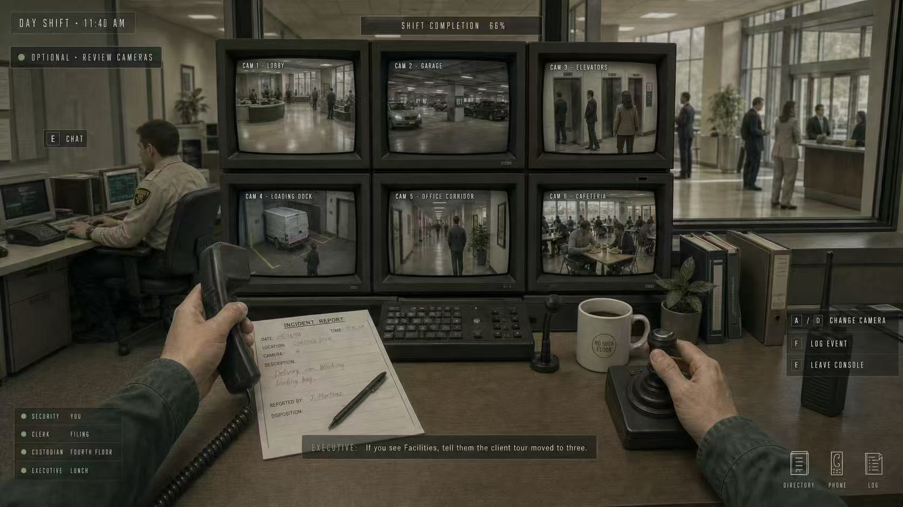
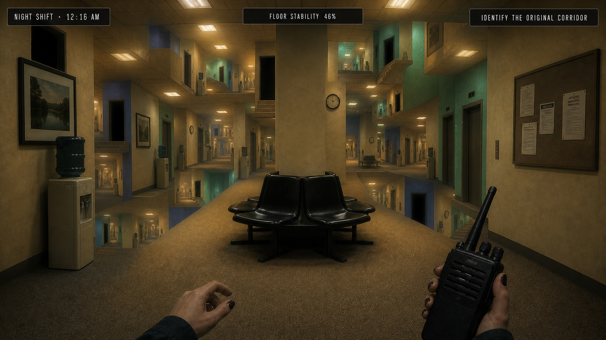
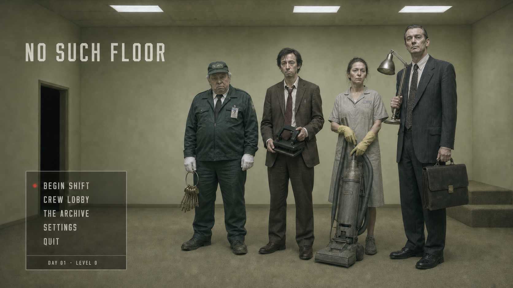
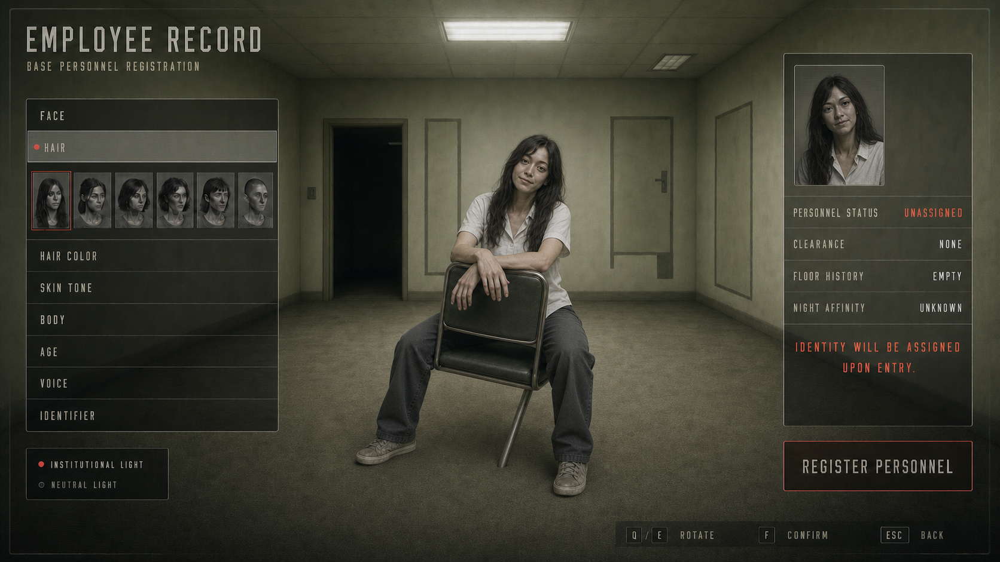
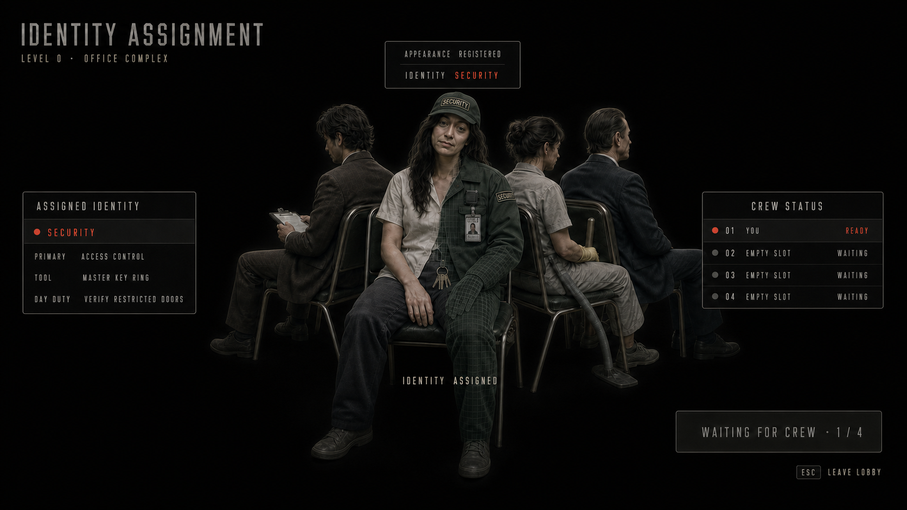

四人共同生活
玩家先创建永久外貌，再由当前 Level 临时分配职业，在白天共同工作、交谈与探索。

白天越熟悉，夜晚发生错误时越令人不安。
四名员工白天在普通公司工作；下班后，其中一人成为“不存在楼层”的主人，其余三人必须在被重新排列的办公室中找齐物资并逃脱。
NO SUCH FLOOR 把办公日常和非对称追逃放进同一局游戏。白天的职业、探索和选择不会在入夜后清零，而会变成夜间地图、能力与逃生路线的一部分。玩家不是直接建造后室，而是在不知不觉中为它留下记忆。
玩家先创建永久外貌，再由当前 Level 临时分配职业，在白天共同工作、交谈与探索。
一人成为 Host，三人成为 Intruders。白天的队友关系在夜里被重新解释。
处理过的漏水、使用过的工具与走过的房间，会影响夜间空间和 Host 的能力。
夜晚不是简单关灯，而是办公室被重新上色、排列和连接，形成“不存在的楼层”。
一局体验分为白天、身份揭晓和夜晚三个阶段。前半段建立熟悉感与资源差异，后半段把这些记忆变成判断与博弈。
四人完成外貌设定，并随机获得本层职业。
完成轻量职业任务，观察空间，收集工具与异常线索。
系统选出 1 名 Host，其余 3 人成为 Intruders。
地图依据 Host 的职业与白天共同经历发生变化。
Intruders 从 7 件物资中取得任意 5 件；Host 改变路线并捕获他们。
物资齐备后进入最终追逐，并依据逃脱人数结算胜负与积分。
白天需要足够正常，玩家才能建立对空间和同事的记忆；夜晚再用错误的比例、连接和颜色，把这份熟悉感反过来用于制造不安。

任务只提供方向，不持续占据画面。玩家可以离开工作台、帮助其他职业，或只是观察公司里的人与空间。

门出现在错误高度，走廊无限重复，档案柜开始生长。办公楼没有消失，而是按照白天留下的记忆被错误地重组。
职业只在当前 Level 生效。它既决定白天能接触到的信息与工具，也为 Host 的夜间能力提供方向。
门禁、监控、封锁与钥匙；更容易理解房间连接和出入口。
档案、复制、文字与身份；能够接触被隐藏或被替换的信息。
污染、漏水、维修通道与空间清理；熟悉不被普通员工使用的路径。
权限、资源分配与规则修改；拥有更完整但也更危险的管理信息。
知道关键物资的初始位置，但看不到玩家的实时位置。通过声音、痕迹和路线判断追踪目标，并封锁房间或改变地图连接。
利用白天记住的空间、职业信息和工具合作搜集物资。被捕获的成员仍可由队友救援，合作不会在第一次失误时结束。
分镜把核心机制放进同一段玩家视角里：白天处理漏水并获得工具；黄昏揭晓阵营；夜晚利用工具打开路径、救援同伴，最终启动出口。

Level 1 用现实、略显陈旧的美国公司作为白天基底。夜晚延续同样的家具、灯光和办公材料，却用不可能的结构创造不同的追逃场景。

DAY · SECURITY MONITORING
NIGHT · REPEATING CORRIDORS入口主视觉、角色创建与 Crew Lobby 组成匹配前的三步：进入世界、确认自己的外貌，再与本局队友集合。

从同一张主视觉进入当前场景与班次，保持封面和匹配入口的视觉连续性。

外貌属于玩家本人，不因职业或 Level 改变，让队友始终能够认出彼此。

四名玩家先以普通身份集合；真正的夜间阵营会在黄昏时揭晓。
每个 Level 都会更换生活场景、临时职业、可用工具和夜间规则；积分与档案则保留在玩家的长期进度中。
我们先设计了整体的玩法与流程，通过 AI 实现部分 UX 与视觉效果；之后会继续深化这个项目。
本项目使用 AI 辅助进行氛围、环境异化与界面展示的视觉探索。玩法机制、交互结构、美术方向、筛选迭代和最终设计决策由我完成；页面中的图像用于表达视觉目标，并非已经完成的实时游戏资产。